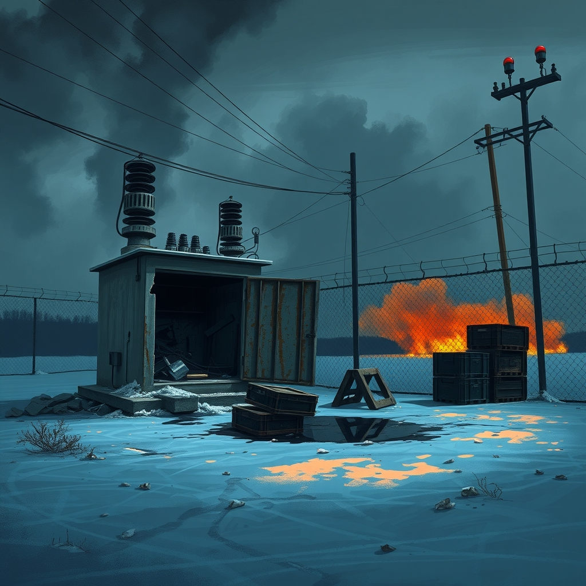
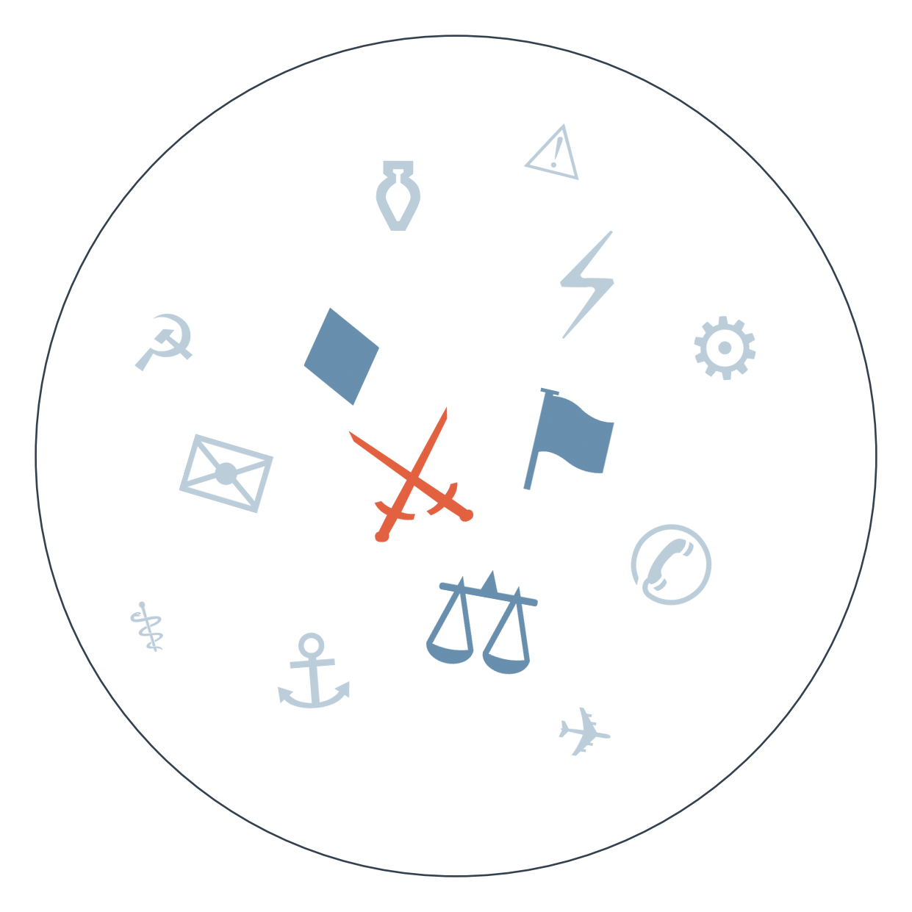

Ранковий бріф · огляд світової преси

Федеральна резервна система підняла ставку — на чверть пункту, до діапазону 3,75–4%. Голова Fed Кевін Уорш, якого сам Трамп і призначив на цю посаду, пояснив рішення інфляцією, що тримається зависокою "надто довго", а у відповідь отримав вимогу президента опустити ставку до "1% або нижче" і звинувачення у "ворожому керівництві" центробанку. Це перший відкритий публічний конфлікт Трампа з власним призначенцем — і перевірка того, чи залишиться ФРС незалежною напередодні проміжних виборів.
Палата представників США 262 голосами проти 159 ухвалила пакет санкцій проти Росії — найбільш суттєвий за понад два роки паузи в підтримці України з боку Конгресу. Закон, що б'є по нафтогазовому й оборонному секторах і дає Трампу нові тарифні повноваження, тепер чекає на його підпис. Це стається на тлі того, що Кремль погодився обговорювати запропоноване Трампом "енергоперемир'я" лише за умови скасування санкцій — тобто закон одразу піднімає ставки в цьому торзі (тривалість: дипломатичні спроби завершення війни в Україні).
Ситуація навколо Ормузької протоки й Баб-ель-Мандебу загострюється не по днях, а по годинах: Aramco зупинила завантаження нафти в порту Янбу після зупинки трубопроводу Схід-Захід, хусити вдруге за тиждень спробували атакувати район Мекки дроном (перехоплено), а Саудівська Аравія, за даними AP, вичерпує запаси ракет-перехоплювачів і просить допомоги у союзників. Деталі про те, хто саме допомагає Ер-Ріяду — і чому про це говорять не всі — нижче, в РОЗКОЛІ ОПТИКИ (тривалість: ескалація навколо Ормузу й Баб-ель-Мандебу).
Спецсуд у Гаазі засудив колишнього президента Косова Хашима Тачі до 25 років ув'язнення за воєнні злочини часів 1998–99 років. У Приштині одразу спалахнули протести прихильників, зіткнення з поліцією, а вирок знову розкрив старі балканські рани напередодні жовтневих виборів у сусідній Сербії.
Росія вночі завдала ударів по Києву і Одесі — щонайменше 12 поранених, пошкоджений навчальний заклад (за даними Kyiv Independent), а раніше цього тижня, за неперевіреними даними Daily Sabah, дрон убив кількох людей в автобусі під Нікополем. У відповідь Україна вразила НПЗ у Ярославлі та бомбардувальник Су-24 — обидві сторони й далі б'ють по енергетиці попри заявлене "енергоперемир'я" (тривалість: дипломатичні спроби завершення війни в Україні).

Сюжет 1: асоційоване членство Канади в ЄС (тема без незалежного підтвердження — подається за версіями нижченаведених видань, потребує перевірки з першоджерел)
Замовчують: жодне з європейських видань не пояснює, чи сама Канада хоче саме такого статусу, а не повноцінного торговельного блоку.
Чому розходяться: Оттава обережна, бо інтеграція без права голосу — це радше залежність, ніж партнерство; Брюссель використовує жест як демонстрацію сили назовні, applausу від власної слабкості в реальних питаннях безпеки; Вашингтон бачить у будь-якому зближенні ЄС і Канади загрозу власним торговельним важелям.
Сюжет 2: хто насправді домовляється з хуситами
🇮🇱 Israel Hayom (з посиланням на п'ять анонімних джерел): викривальний тон — США провели секретні перемовини з хуситами в Омані саме тоді, коли Саудівська Аравія зверталася по допомогу до Ізраїлю; подача натякає на подвійну гру Вашингтона.
Замовчують: факт перемовин у Омані підтверджує лише Israel Hayom — жодне інше видання в дайджесті цього не повторює.
Чому розходяться: ізраїльське видання зацікавлене показати Ізраїль єдиним надійним партнером Ер-Ріяда; катарський Al Jazeera обережний щодо визнання прямої ролі США, щоб не загострювати регіон; західні видання воліють говорити про технічний дефіцит зброї, а не про дипломатичну закулісу.
01.09 дохідність 10-річних облігацій США зростає, ринок починає закладати радше жорсткість → 16.09 Fed під головуванням Уорша піднімає ставку до 3,75–4% попри тиск Білого дому → Трамп публічно вимагає "1% або менше" і називає керівництво ФРС "ворожим" → веде до першого відкритого випробування незалежності центробанку під власним призначенцем президента напередодні проміжних виборів.
03.09 ЄС відкладає продовження санкцій проти Росії через вимогу Франції зняти Усманова зі списку і блокаду Словаччини (голосування перенесено на 22.09) → 16.09 Конгрес США натомість ухвалює власний, значно жорсткіший пакет санкцій — перший великий крок підтримки України за понад два роки → веде до розбіжності темпів між Вашингтоном і Брюсселем саме тоді, коли Кремль ставить скасування санкцій умовою "енергоперемир'я".
[кінець серпня–початок вересня] США знищують п'ять іранських танкерів біля Харгу, Іран б'є у відповідь по базі в Йорданії → хусити встановлюють фактичний контроль над Баб-ель-Мандебом і вдруге за тиждень намагаються атакувати Мекку → сьогодні Aramco зупиняє завантаження в Янбу, Brent зростає на понад $3, Ер-Ріяд просить допомоги союзників через дефіцит перехоплювачів → веде до можливого залучення Ізраїлю в оборону Саудівської Аравії — сценарій, що поки спирається лише на одне джерело (Israel Hayom, анонімні джерела) і залишається непідтвердженим.
Американські акції просіли одразу після рішення ФРС — ринок сприйняв підвищення ставки як сигнал довшого циклу жорсткості, а не разового кроку.
Brent тримається вище $80 після зупинки саудівського трубопроводу й атак хуситів; іранський нафтоекспорт, за оцінками Gulf News, наблизився до нуля через санкційний тиск.
Аргентинські аграрії вдвічі оптимістичніші за американських колег щодо цін на землю — контраст на тлі глобальної невизначеності ставок і врожаїв.
Поки якісна преса б'ється над рішенням ФРС і санкціями проти Росії, Bild публікує тижневий гороскоп і застерігає від "наркотика страшнішого за фентаніл" у Сан-Франциско — жодного слова про ставку чи Конгрес.
Fakt зосереджений на побутовому кримінальному хроніку — пожежі, ДТП, суди — світова політика для польського таблоїда сьогодні не існує.
Times Now в Індії ставить поруч розслідування про контроль Meta над алгоритмами і суперечку учасників "Bigg Boss" — розрив між серйозним і розважальним порядком денним тут буквально в одній стрічці.
Ухвалений Конгресом санкційний закон (див. ГОЛОВНЕ) дає Вашингтону новий важіль тиску на Москву саме тоді, коли Кремль вимагає скасування санкцій як умову "енергоперемир'я" — це посилює позицію Києва в торзі, але й підвищує ризик зриву самих перемовин.
Нічна атака на Київ і Одесу та удар у відповідь по НПЗ у Ярославлі (див. ГОЛОВНЕ) підтверджують: попри заяви Трампа, реального перемир'я в енергетичній війні немає — а отже, українським енергокомпаніям доведеться готуватися до зими без паузи в ударах.
Росія планує побудувати одну з семи нових великих тюрем до 2035 року на тимчасово окупованій Херсонщині (за даними Klix) — сигнал про те, що Москва планує довгострокову інфраструктуру окупації, а не тимчасове утримання територій.
Секретні перемовини США з хуситами в Омані підтверджує лише Israel Hayom з посиланням на анонімні джерела — жодне арабське чи західне мейнстрім-видання цього не повторює, ймовірно тому що підтвердження зашкодило б і Вашингтону (визнання прямих контактів із рухом, який США вважають терористичним), і Ер-Ріяду (визнання власної слабкості й звернення по допомогу до Ізраїлю).
Перемовини Ізраїлю з Ліваном щодо Хезболли — гучний сюжет ще два тижні тому — сьогодні повністю зникли з порядку денного: раунд у Римі перенесено на жовтень, а увагу редакцій повністю перебрала ескалація навколо Ормузу й хуситів.
Попередження генсека ООН Гутерреша про ризик "світового вибуху" через одночасні конфлікти в Україні й на Близькому Сході цього дня підхопило лише державне білоруське BelTA — жодне велике західне видання не винесло цю фразу в заголовки, бо вона не дає конкретного приводу для дії жодній редакції.
Середня впевненість: Саудівська Аравія і Ізраїль можуть найближчими тижнями оформити якусь форму координації протиповітряної оборони проти хуситів. На чому ґрунтується: єдине джерело — Israel Hayom з анонімними джерелами; офіційного підтвердження немає.
Висока впевненість: Трамп підпише ухвалений санкційний закон проти Росії, хоча може супроводити це заявами про вибіркове застосування. На чому ґрунтується: закон пройшов Палату представників переконливою більшістю (262–159), і адміністрація раніше публічно підтримувала жорсткість щодо Москви як важіль тиску.
Середня впевненість: результат виборів у Мекленбурзі-Передній Померанії задасть тон коаліційним торгам у Саксонії-Ангальт (~20.09). На чому ґрунтується: кілька німецьких видань (Spiegel, Denik N) прямо пов'язують ці два процеси.
Рахунок: 8 з 17 (базово 7 з 17) — оновлено 17.09.2026: два прогнози з горизонтом 17.09 не справдились — ЄС знову відклав продовження санкцій проти Росії (перенесено на 22.09 через вимогу Франції щодо Усманова), Естонія не оголосила кадрових змін в оборонному відомстві.
Наші:
Трамп підпише ухвалений Конгресом закон про санкції проти Росії до 01.10.2026
Саудівська Аравія й Ізраїль оголосять про певну форму координації протиракетної оборони проти хуситів до 01.10.2026
Ізраїль розпочне обмежену військову операцію проти Хезболли в Лівані до 01.10.2026, попри перенесення переговорів у Римі на жовтень
Кажуть інші:
Goldman Sachs (за Mint): ще одне підвищення ставки ФРС очікується в жовтні 2026 — горизонт: жовтень 2026.
Fed / Кевін Уорш (за Le Temps, FT): до кінця 2026 року очікується ще одне підвищення ставки — горизонт: 31.12.2026.
Орієнтовно 20 вересня — формування коаліції в Саксонії-Ангальт після виборів, на тлі сьогоднішніх теледебатів у Мекленбурзі-Передній Померанії.
Далі за календарем: горизонт 25 вересня — можливе відновлення переговорів Ізраїлю з Ліваном щодо Хезболли або перехід до наземної операції. Жовтень — наступне засідання ФРС, де очікується ще одне підвищення ставки. 25 жовтня — парламентські вибори в Сербії, оголошені Вучичем на тлі політичної кризи. Найближчі дні — очікуване відновлення саудівського трубопроводу Схід-Захід, за словами міністра енергетики США Кріса Райта, який казав про це "протягом днів".
Базова лінія у прогнозах. Відсоток «базово» — це ймовірність події за інерцією, якщо ніхто нічого не робитиме й нічого не зміниться. Друге число — наша впевненість. Прогноз має сенс лише тоді, коли ці числа розходяться: збіг означає, що ми просто описали поточний стан.
Відсотки в карті уваги. Частка країни в денному обсязі зібраних матеріалів. Не показник важливості події, а показник того, скільки місця країна зайняла в новинному потоці за добу. Різкий стрибок частки зазвичай означає, що в країні щось відбувається.
Стрічки, які не відповіли. Не відповіли: Zerkalo, Caixin, The Paper, TVN24, Al Arabiya, Milenio